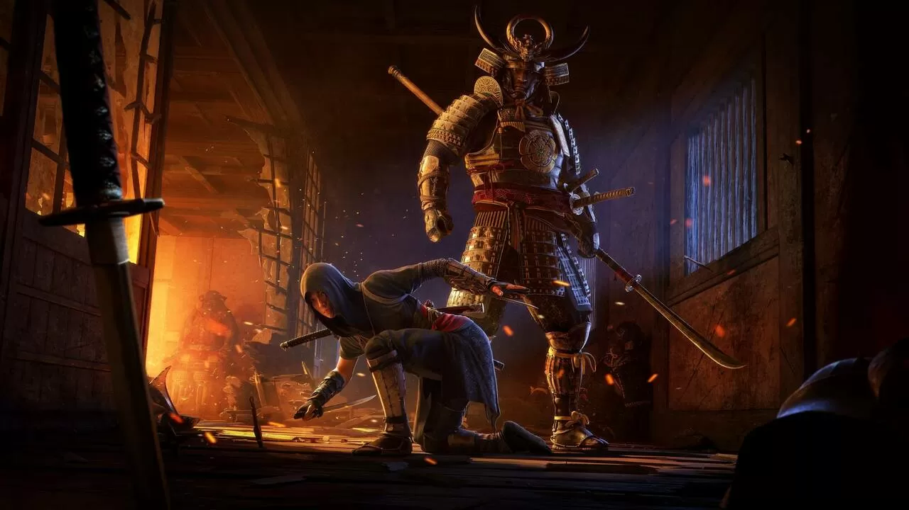

Ubisoft agradece a los jugadores la cálida acogida de Assassin's Creed Shadows: 'Esto es solo el principio'
No ha pasado ni una semana desde que Assassin's Creed Shadows se pusiera a la venta para PS5, Xbox Series X/S y PC, pero el título ya se ha convertido en todo un éxito para Ubisoft tras haber superado los 2 millones de jugadores en su primer fin de semana, lo que ha dejado claro que las ganas de explorar el Japón feudal en esta saga se ha impuesto a las diversas polémicas que ciertos sectores han intentado generar en torno a esta entrega.